are the values in the cells needs to determine, 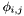 - set of basis functions:
are the values in the cells needs to determine, 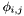 - set of basis functions:We try to build function as cells of equidistant grid with values:
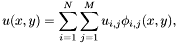
where are the values in the cells needs to determine, 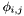 - set of basis functions:
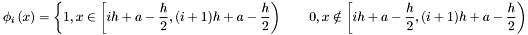
Here is the breif scheme of CMOFS algorithm:
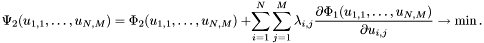
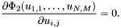
Note: derivatives of already determined 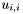 must not be calculated.
| Name | Description | Functional | Example
|
| func | ordered data points |
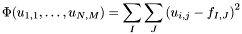 where cell (i,j) is the same as func's cell (I,J). | map_func.tcl
|
| defarea | domain of the function | 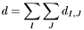
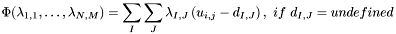
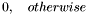 where cell (i,j) is the same as defarea's cell (I,J). | map_defarea.tcl
|
| task | scattered data points | 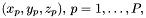 - set of scattered data points, 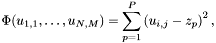 where point with coordinates 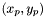 belong to the cell (i,j) | map_task.tcl
|
| area | area with constant value described with closed 2D piecewise linear curve | 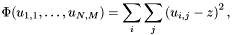 where (i,j) - indexes of the cells in area, z - area constant value. | map_area.tcl
|
| iso | piecewise linear isoline |
where (i,j) - indexes of the cells crossed with isoline, z - isoline value. | map_iso.tcl
|
| cntr | 3D piecewise linear curve | 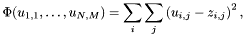
where (i,j) - indexes of the cells crossed with contour, | map_cntr.tcl
|
| fill_with | sets value for all undefined cells |
where (i,j) - indexes of the undefined cells,
| |
| completer | describes surface behaviour in areas without any data. The first summand tells that surface must tend to constant surface, the second - surface must tend to plane. | 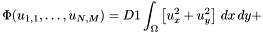
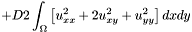 where integration changes with summation, differentiation with finite-difference analogues. | all examples here
|
| trend | trend surface (a kind of completer) | 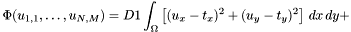
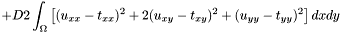 where integration changes with summation, differentiation with finite-difference analogues. | map_trend.tcl
|
| wfunc | ordered data points |
modifies completer or trend functional with adding summand with "informational weight" 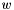
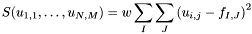 where cell (i,j) is the same as wfunc's cell (I,J). | map_wfunc.tcl
|
| wtask | scattered data points | 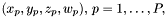 - set of scattered data points, 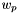 - informational weight for p-th point. modifies completer or trend functional with adding summand
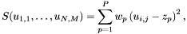 where point with coordinates belong to the cell (i,j) | map_wtask.tcl
|
| warea | area with constant value described with closed 2D piecewise linear curve | modifies completer or trend functional with adding summand with informational weight : 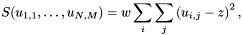 where (i,j) - indexes of the cells in area, z - area constant value. | map_warea.tcl
|
| wiso | piecewise linear isoline | modifies completer or trend functional with adding summand with informational weight :
where (i,j) - indexes of the cells crossed with isoline, z - isoline value. | map_wiso.tcl
|
| wcntr | 3D piecewise linear curve | modifies completer or trend functional with adding summand: 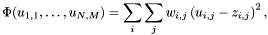
where (i,j) - indexes of the cells crossed with contour, | map_wcntr.tcl
|
| flt | tectonical fault line | To take fault line in terms of grid, fault line transforms to grid based line using modified Brezengham algorithm. After that fault line presented as a set of cell borders. Modifies completer or trend functional: the summands, for which two neighbour cells have the "faulted" borders will be removed from the functional.
| map_flt.tcl
|
surfit constructs the functional sequence using priority variable and internal order of presented functionals:
Consider one factitious example:
$ load libsurfit[info sharedlibextension] $ iso_load iso.dat $ set priority 1 $ task_load task.dat $ wtask_load wtask.dat $ set priority 2 $ trend_load trend.dat $ completer_set 2 1 |
According to this script, surfit loads data to the memory and constructs the functional sequence:
This sequence means that the first data to take into account is isoline, next task, then trend. At the last is completer with wtask (wtask will modify completer functional).
surfit-1.0.0pre
![\[ f = \sum_I \sum_J f_{I,J}, \]](form_11.png)
 - mean value of contour for the (i,j) cell.
- mean value of contour for the (i,j) cell.